步入老河沟
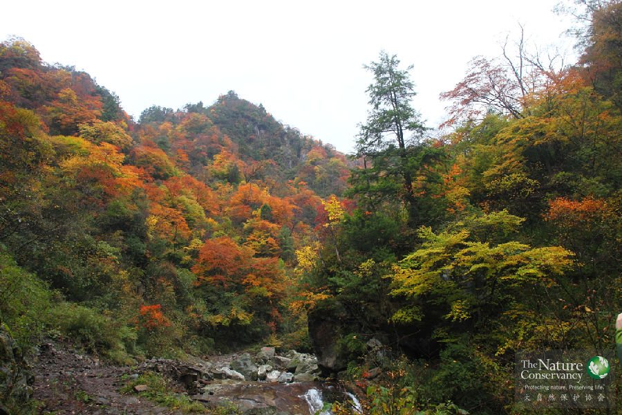
四川老河沟项目地®张铭
自然环境
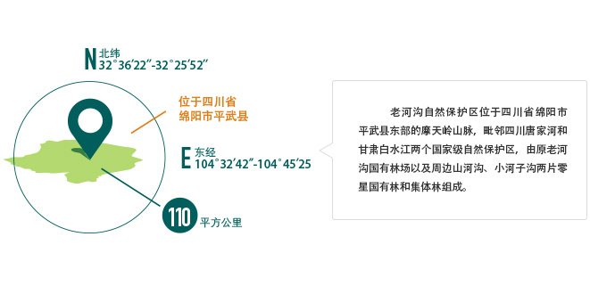
摩天岭山脉地处中亚热带季风气候区，位于川西平原向高山峡谷至青藏高原的过渡地带，是我国西南山地生态系统的重要组成部分， 也是中国32个陆地生物多样性优先保护区域之一——“岷山-横断山北端优先区”中一个重要的关键区域，是大熊猫的最佳栖息地之一，连接着岷山山系中的大熊猫种群。
秘境森林
老河沟自然保护区内以高山峡谷地形为主，围绕着发源于森林深处、一直汇入长江上游支流涪江的老河沟、小河子沟和山河沟三条山地溪流，形成了三个相对独立的封闭小流域，也为下游居住的村民提供了源源不断的清洁用水。从海拔1000-1200m的河边，延伸到山顶处海拔3500m的高山草甸和高山流石滩，老河沟的垂直高差达到2500m，也因此造就了复杂的气候和环境条件，形成了较为完整的森林植被垂直分布带。
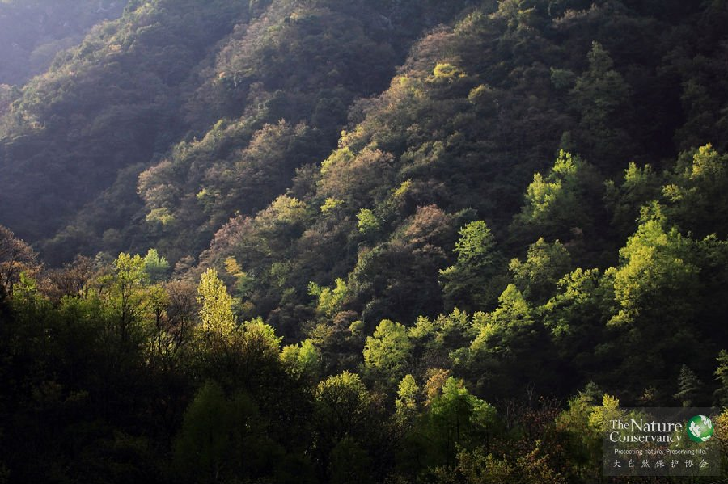
四川老河沟项目地®张铭
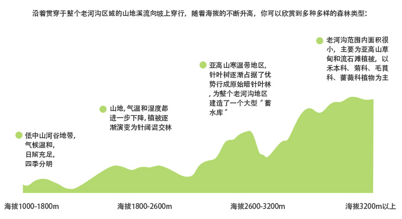
生灵奇境
老河沟多样的环境和植被，同样为野生动物的生存繁衍提供了丰富多样的栖息环境和食物，因此这里的生物多样性也十分丰富。为了将更真实准确的了解老河沟的生物多样性，从2011年4月起，一套覆盖了气候、水文、植被、各个动物类群等生态系统食物链各个环节的本底调查和监测体系在这里建立并且逐步完善起来。
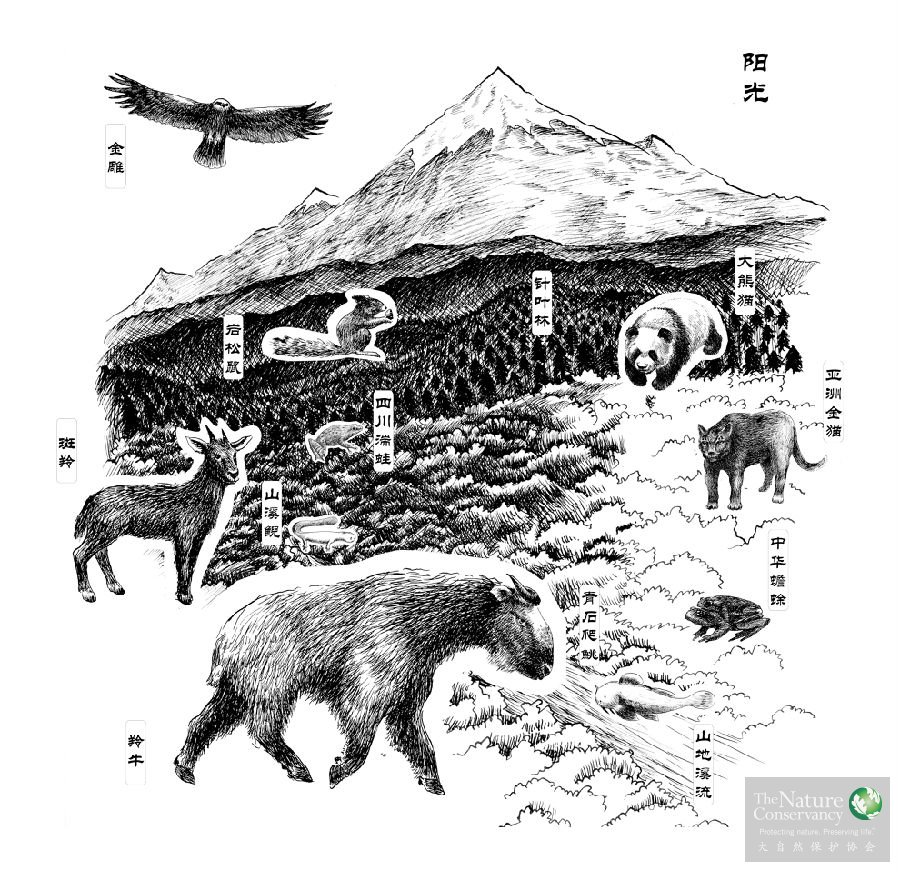
在近一年半时间的细致野外调查中，仅原老河沟林场内就记录到了红豆杉、连香树、水青树、独蒜兰等十几种国家一、二级保护植物，青石爬鮡、齐口裂腹鱼、尖头鱥等5个鱼类物种，西藏山溪鲵、四川湍蛙等10个两栖类物种，菜花原矛头蝮、山烙铁头蛇等12个爬行类物种，156个鸟类物种，以及包括大熊猫、川金丝猴、羚牛、林麝等国家一级保护动物在内的19种大中型兽类。随着野外工作的不断深入，调查范围的不断扩展，更多的类群和物种z还将被发现记录。要完全摸清摩天岭区域内的动植物种类和现状，需要再未来的三年内逐渐积累信息。但目前在这里工作的科学团队一致认为：老河沟自然保护区虽然面积有限，但却是“岷山-横断山北段”这个优先保护区在生物多样性上的一个缩影。
明星动物档案之豹猫
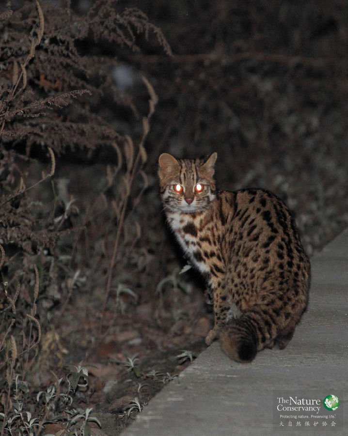
四川老河沟项目地的豹猫®张铭
✴ 体长 40－60cm
✴ 尾长 22－40cm
✴ 体重 2－3.5kg
✴ 英文名：Leopard Cat
✴ 常用俗名：野猫，狸猫
✴ 濒危保护级别：CITES:附录II；IUCN: NT（近危）
✴ 形态概述：体型类似家猫，全身遍布棕黑色大小斑点。两眼内侧至额后各有一条白色纹，从头顶至肩部有四条黑褐色点斑， 耳背具有淡黄色斑。尾巴背面有褐斑点或半环，尾端黑色或暗棕色。
豹猫因满布豹纹斑点的华丽皮毛而得名，它体型大小似家猫，故当地人又称之为“猫豹子”。豹猫是中国分布最广、种群数量最多的小型猫科动物，从寒冷的东北到炎热的海南都有豹猫的身影，这样大跨度的南北分布，使中国拥有5个豹猫的亚种。豹猫的花纹和毛色根据其南北分布的不同也有区别，分布靠北的豹猫毛色普遍较浅且发灰，色斑花纹与底色的反差也不及靠南分布的豹猫那么分明。即使同一地区分布的豹猫，其毛色和花纹也有细微差别，就如人的指纹没有完全的重合。豹猫不仅广泛分布在老河沟自然保护区的森林里，它们也时常光顾周边的社区，社区居民经常反映豹猫偷食家禽的事件。其实这绝非偶然，豹猫是个不折不扣的机会主义者，它们习惯晚上外出觅食，只要途径路过能够果腹的食物都不放过，鼠类、鸟类、两栖爬行类甚至昆虫。一只唾手可得家鸡当然是它们不会拒绝的美味，何况喜欢与人共生的啮齿类动物也是豹猫的最爱。一只成年豹猫的家域面积大约1-8平方公里。
明星动物档案之藏酋猴
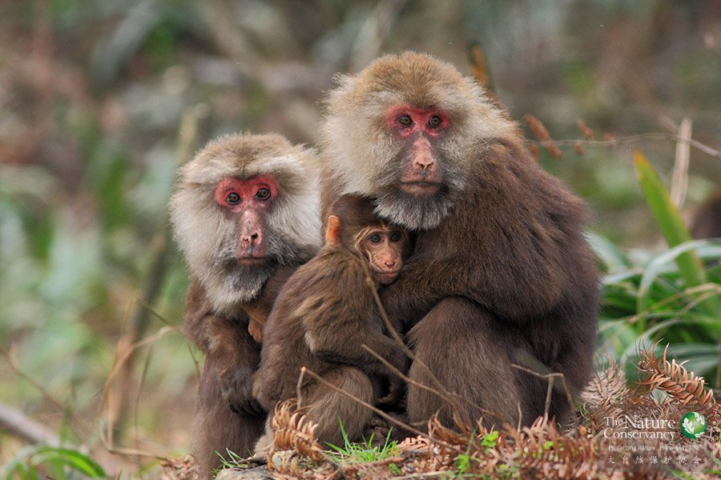
四川老河沟项目地的藏酋猴®张铭
✴体长 52－70cm
✴尾长 6－7cm
✴体重 10－25kg
✴英文名 Tibetan Macaque
✴ 常用俗名：短尾猴，红面猴，藏猕猴
✴ 濒危保护级别：中国II级；CITES:附录II；IUCN: NT（近危）
✴ 形态概述：猕猴属最大的一种猴，身体粗壮，尾较短，不及后脚之长。背毛棕褐，暗棕褐或黑褐色，胸部浅灰，腹毛淡黄色。颜面部仔猴为肉色，幼年白色，成年鲜红，老年转为紫色具黑斑或为黑色。
明星动物档案之林麝
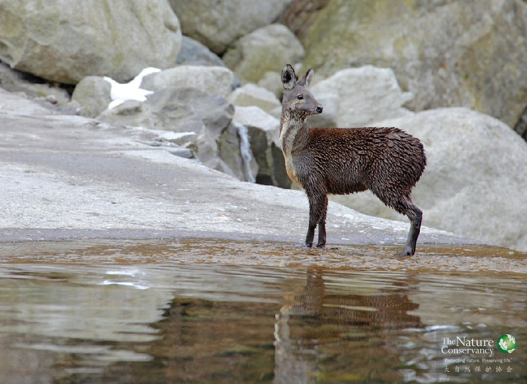
四川老河沟项目地的林麝®张铭
✴ 体长 60－80cm
✴ 尾长约 3cm
✴ 体重 6－9kg
✴ 英文名 Forest Musk Deer
✴ 常用俗名 獐子，香獐，香子，林獐
✴ 濒危保护级别：中国I级；CITES: 附录II；IUCN:EN（濒危）
✴ 形态概述：体型稍小于马麝，臀高于肩。成体毛色暗褐，染橘红色泽。两颊下方至前胸部有一白色或淡黄色的颈纹。毛粗硬，呈波状弯曲， 脆而易脱落。雄麝犬齿长而弯曲，在后腹外生殖器部位有麝香腺囊
林麝这个名字，可能对很多人来说比较陌生，真正在野外见过的就更是凤毛麟角。但对于中医药里著名的传统药材、素有“软黄金”之称的“麝香”，大部分人则是耳熟能详。麝香，就是麝科动物成年雄性个体身上麝香腺的分泌物，平时储存在其身体后部的麝香囊中。我国是麝科动物的主要分布区，其中的林麝，则是分布范围最广、提供麝香产量最多的一个物种。麝是一种小型的偶蹄目动物，从进化上来说，与鹿类的亲缘关系最近，在分类学中曾一度被归入鹿科之下。但在最新的分类系统中，由于其具有相对鹿类更原始的形态特征，同时分子生物学的证据也显示，在进化的系统树上，它们很早之前就已经与其他鹿科动物分化开来，因此被归入了单独的麝科。林麝生性羞怯，平时都是独居。正如其名所述，林麝主要分布在森林类型的栖息地中。在老河沟自然保护区，从低海拔的阔叶林，到中高海拔的针阔混交林，以及高海拔的针叶林中，都能见到它们的身影。它们也是这个生态系统中唯一能够上树的偶蹄类动物。足部独特的结构，使它们能够稳稳的爬上倾斜的树干或树枝，从而躲避天敌的追捕。
明星动物档案之菜花原矛头蝮
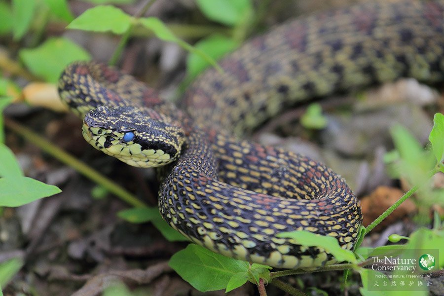
四川老河沟项目地的菜花原矛头蝮®张铭
✴ 学名 Protobothrops jerdonii(Günther，1875)
✴ 中文俗名: 菜花烙铁头
✴ 形态特征:体型中等，成体全长，雄性 (652～673+137～1 6 4 ) 毫米， 雌性( 5 9 0 ～724+110～151)毫米
这是一种剧毒的蝮蛇，长着窄长三角形的头，吻棱明显。背面黑黄间杂，有两种类型：一类黄色为主，整体呈草黄色；一类黑色为主，杂以鲜明的菜花黄色。无论哪种类型，大多数的正背还有一行镶黑边的铁锈色或紫红色大斑块，腹面黑黄间杂。头背黑色而有黄色套叠的细圈纹。一对注射毒液的管牙长在上颌骨。眼与鼻孔之间有有一个颊窝，里面有一层对热量非常敏感的薄膜，能感知周围气温千分之几摄氏度的变化，所以菜花原矛头蝮喜欢夜间外出捕食，只要附近有像鼠类等温血动物存在，它们就会快速确定目标伺机扑杀。因此，夜间在山路上行走要特别小心。每年的7～9月是它们的繁殖季节，菜花原矛头蝮的繁殖方式非常特别，它们的卵在体内受精、体内发育，受精卵在母体内发育成新个体后再产出体外。目前，滥捕偷猎以及栖息地减少，是菜花原矛头蝮面临的主要威胁。
在老河沟海拔1400-1900米的林地边缘、草场附近、以及山路边的灌丛和旧公路的路基石块间都可以见到它们的身影，特别是天晴它们常聚在石上晒太阳。
明星动物档案之花面狸
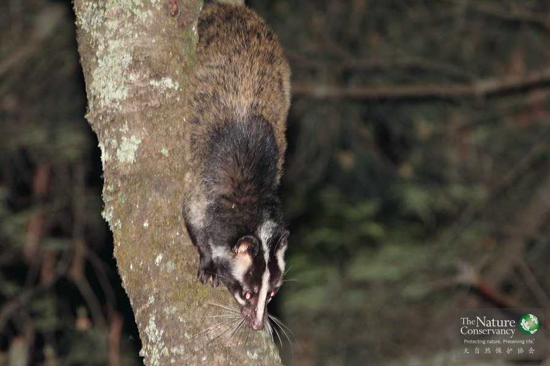
四川老河沟项目地的花面狸®张铭
✴ 体长 46－69cm
✴ 尾长 44－59cm
✴ 体重 2－4kg
✴ 英文名 Masked palm civet
✴ 常用俗名：果子狸，苇子
✴ 濒危保护级别：CITES:附录III；IUCN:LC（无危）
长着一张小丑般花哨的脸谱而得名的花面狸身体却是低调的灰褐色。因酷爱采食野果，所以人们又把它称为果子狸。
很多人对于果子狸的深刻印象都来自于2003年的SARS（非典）疫情...
花面狸这个名字对于很多人来说可能比较陌生，但如果提起它的另一个名字，果子狸，的话，相信大多数人都曾耳闻。因为SARS疫情爆发后，科研人员在当地野生动物餐馆非法售卖的果子狸体内检测到了与感染人体的SARS冠状病毒同源的病毒，因此果子狸曾一度被认为是SARS病毒的源头，然后通过野生动物餐馆传播给了人类。
与它们的远亲猫科动物不同，花面狸是杂食性动物。每年5、6月份是野樱桃成熟的季节，每当夜幕降临，它们便成双结对的爬上樱桃树大啖其果，虽然它们胖乎乎的五短身材在地面显得有些笨拙，但爬树功夫可是一流，连树冠细枝上的果实也能轻易取食，保持平衡的长尾巴和锋利的爪子此时发挥了重要的作用。老河沟自然保护区拥有丰富的野生水果资源，在漫长的夏秋季节，源源不断的野果为花面狸提供了丰富的食物来源，这段时间也是它们繁衍后代的黄金季节，花面狸每胎产仔1-5只。
花面狸是种非常害羞和胆怯的动物，一旦发现人类，不管是在树上还是在路边，立即择路而逃，所以在夜间观察动物时很难近距离目睹它们的身影。不过借助于望远镜，我们可以利用其喜食野果的习性在果树附近进行观察。
探秘老河沟之拐沟
竹兰
大家都知道熊猫吃竹子， 但很多人印象之中的“ 竹子” ， 可能都是类似于电影《十面埋伏》中那粗大、挺拔、绵延不绝以成竹海的“竹子” 。其实，那些竹子，跟我们的国宝大熊猫半毛钱关系都没有。大熊猫真正吃的竹子，则是我们眼前这些毫不起眼的“ 小” 竹子。这些竹子， 大都生活在山地森林的乔木遮蔽之下。湿润的气候、林间散落的阳光和土壤中富集的有机质， 为这些竹子的生长和更新提供了绝好的条件。
糙花箭竹
大熊猫吃的竹子不止一种，在一个熊猫种群活动的区域内，往往会沿着海拔梯度的变化分布有数种不同的竹子。在竹子的各个部分中，鲜嫩的竹笋是大熊猫的最爱。由于不同竹种每年发笋子的季节也不同，大熊猫就会追随竹笋发生的脚步而迁移，从而表现出季节性的短距离垂直迁徙行为。
西康木兰
木兰科植物，是木兰属中较原始的物种，在系统发育方面具有科学价值。国家Ⅱ级保护物种。单花枝顶生，白色花大而美。优良观赏植物，在欧美有引种栽培。
独蒜兰：
独蒜兰开花时，花朵的旁边会长出一片叶子，因而又被称为“一叶兰”，而独蒜兰的名称则来自于它形如蒜头的假鳞茎。西方称独蒜兰为“窗台花”，因为它容易栽培，也是⾮非常流行的小型盆栽观赏兰。国家二级保护物种。半附生，主要生长在“山崖岩壁”，与苔藓共处，生长环境较为特殊。独蒜兰的假鳞茎可⼊入药，有清热解毒、消肿散结、化痰止咳之功效。常用以治疮疖痈肿、毒蛇咬伤。
独蒜兰盛开在春季，紫红色的花常常成片的挂在阴潮的岩壁上，像大蒜头样的假鳞茎藏在湿润的苔藓下面，和许多老河沟的兰花一样，它们都是国家二级保护的珍稀兰科植物。
水生监测
以老河沟山地溪流为中心，准确地了解保护区内水环境和水生生物（鱼类）的现状和面临的问题，客观地评价区域水生生态环境现状,为顺利实施保护区生态保护和恢复工程提供实时决策信息和技术支持，是相当重要和十分必要的。摸清本底，并通过建立监测体系，实
现生态监测，既可以对重要经济物种或濒危物种的合理利用及保护与管理对策的制定提供科学依据，也可以客观科学地评价区域水生环境保护与恢复工作的成效。在这个基础上设立一些监测站点，通过长期坚持的一种监测能够掌握整个流域的物种多样性变化、物种组成变化以及整个水环境条件的变化，从而得到一个比较长期的数据，用这个数据来为这个地区所要进行的物种多样性的保护或者生态保护工作提供一些科学依据,并且有针对性的提出一些治理的方法，最后也通过这些监测数据来说明我们的恢复工作以及保护工作究竟在多大程度上收到了成效，是不是达到我们预期中的目标。
水生监测主要的方法是通过大量的野外采样及调查来设计比较合理的监测点，然后来进行水环境因子的测量，还有水生生物包括鱼类、底栖动物的样本采集。在各个样点对野外环境因子测量的同时还要把一些样本带回实验室内进行进一步的处理。
将所有的数据进行汇总处理后，能使我们对整个流域的水环境条件和水生生物的物种组成等有一个比较全面的了解，一些监测样点的设置就达到我们所说的最终目的。通过监测点、监测体系的设立，最终实现对整个水环境条件的评价，从而对最终水环境的改造修复、生物多样性的恢复工作提出我们最终客观科学的评价。
四川湍蛙
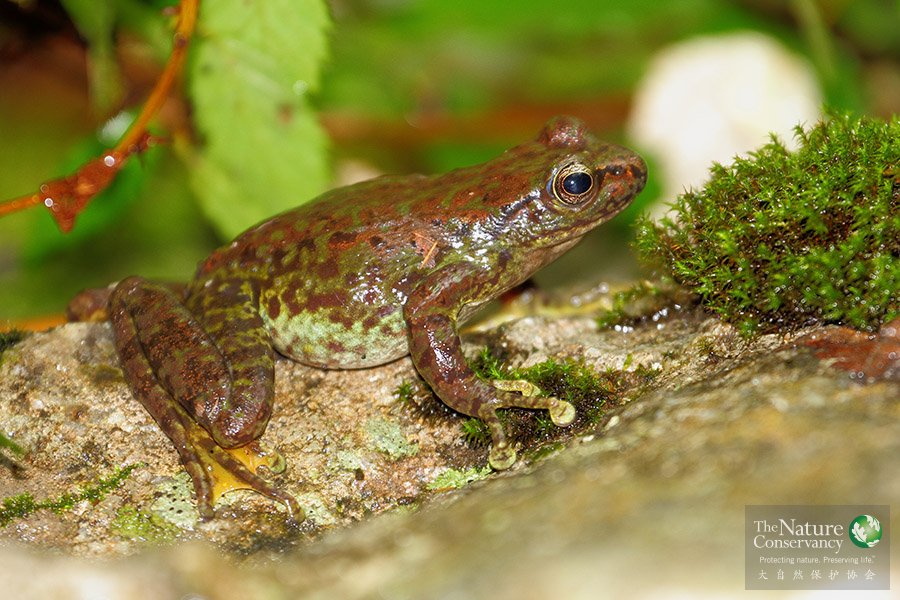
中国特有种，横断山区型。是老河沟海拔2000米-2200米山地溪流中主要分布的蛙类，白天躲在石头下，晚上出来活动，喜食各水生昆虫。每年的5-7月为繁殖期，雌雄抱对产卵，卵乳白色，卵团粘在石块底面，孵化的蝌蚪凭借腹吸盘可以吸附在流水湍急的溪流内石头上取食，这些独特的结构和功能都是为了能够在激流的山溪中生活。
由于蛙肉可食用，常有外来人员对其进行滥捕偷猎。此外，气候变干、滑坡和泥石流等栖息地减少，以及修建拦水坝和小水电站等改变水的自然流向和流量，会导致四川湍蛙的受精卵的发育受到较大影响，这些都是四川湍蛙面临的主要威胁。
一道桥植物群落
水青树
水青树科落叶乔木，稀有种，第三纪古老孑遗珍稀植物，分布于陕西南部、甘肃东南部、四川中南部和北部等地，第三纪古老孑遗珍稀植物，国家Ⅱ级保护濒危种。水青树的木材无导管，对研究中国古代植物区系的演化、被子植物系统和起源具有重要科学价值。
领春木
领春木，别名：云叶树、正心木和木桃，隶属领春木属昆栏树科树种，落叶小乔木，为典型的东亚植物区系成分的特征种，第3纪孑遗植物和稀有珍贵的古老树种，对于研究古植物区系和古代地理气候有重要的学术价值。国家Ⅱ级保护濒危种。花果成簇，红艳夺目；新叶和老叶均为紫红色，是优良的观赏植物。
西藏刺榛/坚果：
在温带的森林生态系统中，刺榛这样的坚果对于生活在其中的很多种动物来说，是极为重要的食物资源。除了刺榛外，类似的坚果还包括核桃、板栗、橡子等等，内部的果仁儿都蕴含有极高的能量和营养物质。
取食这些坚果的动物则小到老鼠、松鼠等小型啮齿类，星鸦等鸟类，大到鹿类等有蹄类和黑熊。每到秋季坚果成熟的季节，这些动物都会开足马力四处寻觅，或大吃狂嚼以积累下足够的能量和脂肪（ 例如黑熊），或广为搜罗以埋藏下足够的储备（例如松鼠），好熬过即将到来的漫长寒冬。
当年坚果产量的多少，将直接影响到这些动物越冬存活率的高低和来年种群数量的涨落。当然，进化所决定的物种之间的利益从来不是单向的。这些动物在转移、埋藏、携带坚果的过程中，总会有少量的种子在中途被遗失。这些幸存的种子则通过动物被带到了更远距离之外，为生产这些坚果的树木提供了扩展其分布范围的重要途径。
每到秋季坚果成熟的季节，这些动物开足马力，四处寻觅坚果的身影。
两爬陷阱
围栏陷阱，是整个老河沟保护区为了进行两栖类和爬行类监测而沿着海拔高度设置一系列设置的的两爬陷阱。主要包括两个部分，最主要的部分是一个四米长的围栏，它的主要作用是当两栖类或者爬行类动物在地面行走时，一旦碰到这个围栏，它就不能穿过，只能沿着围栏行走，沿着这个围栏的两面各设有一个桶，这个桶就可以收集这些两栖爬行类，它们沿着这个围栏行走的时候就会掉进这个桶里面爬不出去，所以说当这个陷阱一旦处于打开状态，就需要每天有人来检查,看看有什么两栖类和爬行类动物掉到这个陷阱里面，然后对它们进行测量和鉴定。
毛冠鹿陷阱
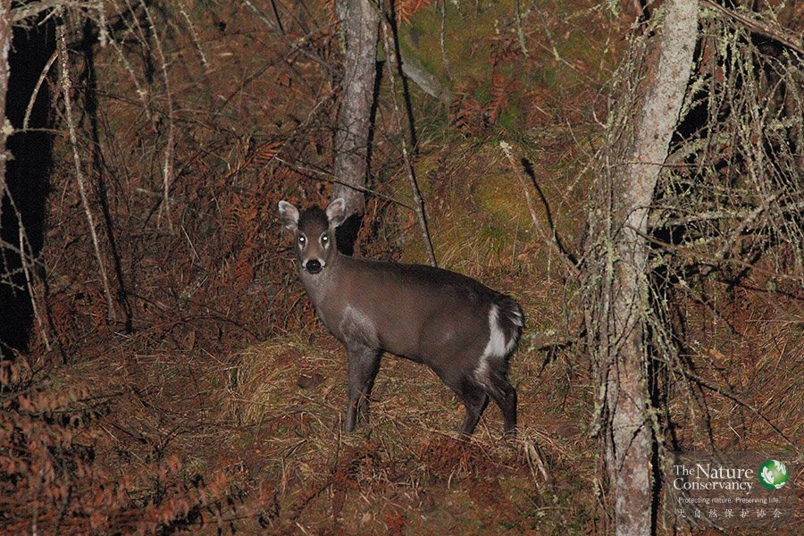
毛冠鹿档案
✴ 体长 80－170cm
✴ 尾长 7－13cm
✴ 体重 15－28kg
✴ 英文名 Tufted Deer
✴ 常用俗名：麂子，青麂
✴ 濒危保护级别：CITES:未收录；IUCN: NT（近濒危）
✴ 形态概述：前额具一黑褐色马蹄形冠毛。雄性残留一对隐于毛中的不分叉短角，上犬齿露于唇外。眶下腺发达，泪窝与眼眶几乎等大。整体毛色暗褐或灰黑色，尾巴背面黑色，腹面白色。
✴ 鉴别要点：明显的黑色冠毛、显著的泪窝、黑白相间的耳朵和腹面白色的尾巴是毛冠鹿最主要的鉴别特征。
毛冠鹿是一种小型的森林鹿科动物，体型比小麂略大，毛色灰黑或青黑，因此也被当地老乡称为青麂子或青鹿子。
毛冠鹿是仅分布于我国的特有种（在缅甸北部也曾有报道，但近年来未再有确切的记录），在西南地区和华中、华东都有记录，曾是一种重要的毛皮兽。但毛冠鹿的野外生态学却少有研究，我们目前对于这个物种的了解仅仅局限于对少量圈养个体的生理、繁育、行为上的少量研究。因此，从2012年春季开始，科学家们在摩天岭保护地启动了一个毛冠鹿野外生态学研究项目，计划通过捕捉野外个体、佩戴GPS颈圈的方法，了解毛冠鹿的活动模式、家域范围、季节性迁移以及栖息地选择等信息。
在老河沟的山地森林中，有蹄类是整个生态系统中重要的组成部分：它们一方面通过取食控制着林下植被和林木幼苗的生长和更新，另一方面又是多种大中型食肉动物的猎物，供养着食物链金字塔顶端的终极捕食者。因此，研究有蹄类动物的生态学以及它们与周围环境、其他物种之间的交互作用，就成为科学家们关注的重点之一。
老河沟自然保护区内共分布有7种有蹄类，通过2011年-2012年间的本底调查，我们发现毛冠鹿是这7种有蹄类中分布范围最广、种群数量最多的一种。同时，有迹象表明，毛冠鹿的分布，与森林的树种组成和林下结构有着密切关系，有可能作为森林健康程度和演替进程的一个指示性物种。因此，我们就选定毛冠鹿作为我们在老河沟开展有蹄类研究的目标物种。
这里所设置的陷阱，就是专门为捕捉毛鹿而设计、制作的。这种类型的陷阱被称作网笼陷阱，适合捕捉中小型的森林有蹄类动物，对动物来说也比较安全。对于捕捉到的动物，我们进行一些基本的体征测量后，将给它们佩戴上GPS卫星定位颈圈并放归自然。通过GPS颈圈收集到的动物个体的活动位点和移动过程信息，将为科学家们提供深入了解这一物种及其与外部环境交互作用的关键数据。
红外触发相机
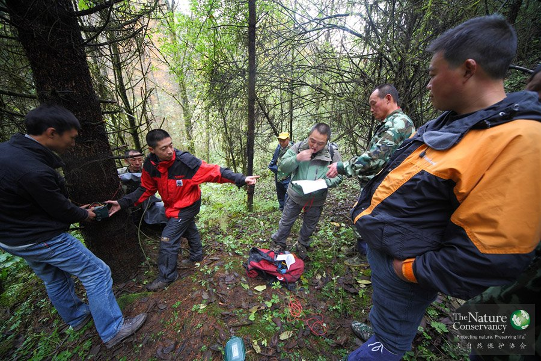
科学家安装红外相机®TNC
近一二十年来，红外触发相机调查技术， 也被称为相机陷阱调查技术， 在野生动物研究、调查与管理中得到了广泛的应用。其核心装置，就是我们在这里看到的被动式红外触发相机。这种相机可以探测到前方热量/ 红外能量的变化， 因此可被从相机前面经过的温血动物（兽类、鸟类）触发， 从而记录下这些动物的影像。相比于传统的野动物调查方法， 这种不需要在场、可以长期24小时连续工作的设备在探测、记录活动隐秘的野生动物时具有很多独特的优势。
在老河沟自然保护区，我们使用这种技术来进行区域内大中型兽类和雉类多样性的本底调查，以摸清区内的动物群落组成和空间分布情况。通过这种相机，我们把整个保护区划分成了很多1公里乘以1公里的网格，然后在每个网格里布置这种相机，从而来了解整个区内的大中型兽类的分布情况和多样性的现状。
2011年至今，红外触发相机已经记录到19种大中型兽类和3种雉类，并为我们提供了大批精彩的野生动物照片。
鸟类声学监测
森林鸣禽是一个重要的生态类群，可以作为森林生态系统健康程度的指示类群。在每年的繁殖季节，这些鸣禽通过鸣唱来吸引配偶、宣示领地。但由于这个季节往往也是植被最为茂盛的时候，在浓密的森林中要通过直接观察来记录、研究它们是非常困难的事情。
因此，我们采用了先进的自动声学记录装置，按照预先设定的工作日程，来记录它们的鸣声和叫声，在老河沟自然保护区建立起了国内第一个大规模的森林鸣禽自动声学监测体系。通过这种方法获取的数据更为准确和客观，经过长期监测的数据积累和分析，可以为科学家和保护区的管理者提供森林鸣禽的繁殖物候、群落变化、种群动态等重要信息。
色木槭
红叶是怎样炼成的
植物叶片除了含有叶绿素、叶黄素、胡萝卜素等色素外，还有一种叫“花青素”的特殊色素，它是一种“变色龙”。秋天绿叶变红，有内外两方面的因素：
（1）内因是胡萝卜素和花青素。（胡萝卜素是普遍存在于叶绿体中的橙红色色素；花青素是存在于液泡内的细胞液中，当细胞液为碱性时，花青素呈蓝紫色，当细胞液呈酸性时，花青素呈红色）
（2）外因是气候条件。（当秋季气温迅速下降到一定程度，而且夜间的温度比白天下降很多时，树叶还没有凋落，而叶绿素已大部分被破坏，同时昼夜温差的增大，也有助于花青素的形成，因此叶子很快变红。如果气温下降很慢，而且昼夜温差不大，叶绿素还没有被破坏而树已经枯萎，那就变不成美丽的红叶了）
苔藓的生态功能
苔藓植物是自然界的“拓荒者”。许多苔藓植物都能够分泌一种液体，这种液体可以缓慢地溶解岩石表面，加速岩石的风化，促成土壤的形成，是其它植物生长的开路先锋。群集生长和垫状生长的苔藓植株之间的空隙很多，具有良好的保持土壤和贮蓄水分的作用。有些苔藓植物本身还有贮藏大量水分的功能，如泥炭藓叶中大型的贮水细胞，可以吸收高达本身重量20倍的水分。苔藓植物对大气污染和重金属污染的反应非常明显，是一种生物指示剂。
苔藓植物对大气污染和重金属污染的反应非常明显，是一种生物指示剂。
6月
19
6月17日，TNC中国项目副主任张小全一行分别拜访了四川省环境保护厅和四川省林业厅，希望通过与省环保厅、林业厅相关部门负责人的深入友好交流，共同探讨未来双方在更广泛的领域开展深度合作的可能性和方向。
6月
26
在川西北摩天岭的密林深处，有一片美丽的野生动物幸福家园――老河沟林场，在大自然保护协会（TNC）和四川西部自然保护基金会的支持下，这片约70平方公里的山林即将转变为由社会公益资金支持的保护区。

2011年5月，我们的工作人员在四川平武县的TNC项目地架设了20台红外相机，对当地包括大熊猫、羚牛在内的大型兽类进行监测。这组照片就是红外相机拍摄到的最原生态的动物朋友们。虽然有些影像并不清晰，但能欣赏到他们在自己家园中悠闲自然的神态，就是我们最大的快乐。

2012年2月10日，四川省平武县老河沟自然保护区下了当年最大的一场雪。TNC工作人员用摄影机记录下了山里的美景，在巡山的过程中，还意外收获了风雪中探头探脑的漂亮小鸟、在水边发呆的林麝……

北京大学动物学博士，师从我国著名的大熊猫保护之父潘文石教授对中国特有的濒危灵长类动物白头叶猴进行了长达六年的野外跟踪观察研究，同时也参与了广西喀斯特地貌生物多样性调查和中华白海豚的种群调查。现为IUCN中国灵长类专家组成员，国际灵长类学会会员。2009年加入TNC，负责滇金丝猴保护项目的设计和组织，以及云南国家公园项目在丽江老君山地区的实施。随着TNC四川项目的策划和启动，逐步参与到了社会公益型保护地项目的科学保护以及信息化建设的策划和实施工作中。